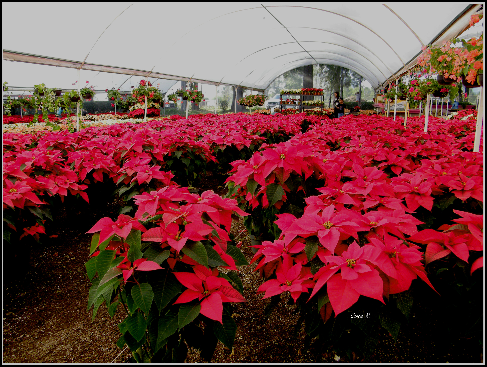
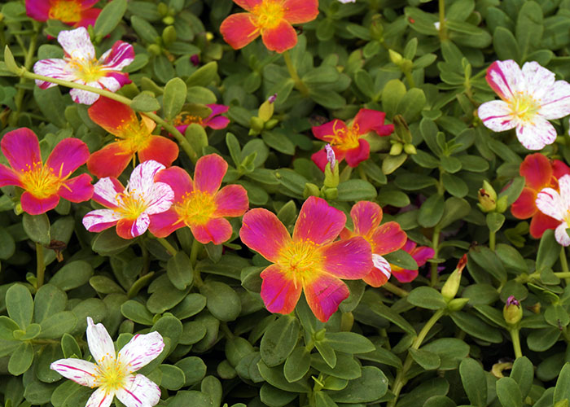

VIVEROS CABRERA


 8
8Uno de los muchos atractivos turísticos que ofrece el municipio de Atlixco son los viveros de la colonia cabrera, mismos que se han encargado de preservar el nombre de “Atlixco de las Flores” esto por la producción de más de 120 mil plantas que se tiene.
Son más de 100 los viveros que se encuentran en toda esta colonia que gracias al turista, así como a los amantes de las flores día con día se va posicionando en el mercado como lugar favorito para llevarse un recuerdo viviente de este Pueblo Mágico./ Quienes llegan por primera vez a Atlixco, no dudan en visitar los viveros mismos que guardan celosamente las miles y miles de variedades que ahí se producen y por mencionar algunas están los Ciprés, Clavellina, Crisantemo, Violeta persa, Gazania, Geranio, Azucena, Palo Brasil, Petunia, Rosas, Pensamiento, arrayán, dedo de niño, jacarandá, jazmín, margarita, mora, mosaico, lengua de pájaro, mariana y la lista es interminables, solo basta llegar a uno de estos viveros y preguntar por su planta favorita y sin duda alguna le mostraran las variedad que en estos viveros se producen.
Viveros

Para saber más dar click aquí: